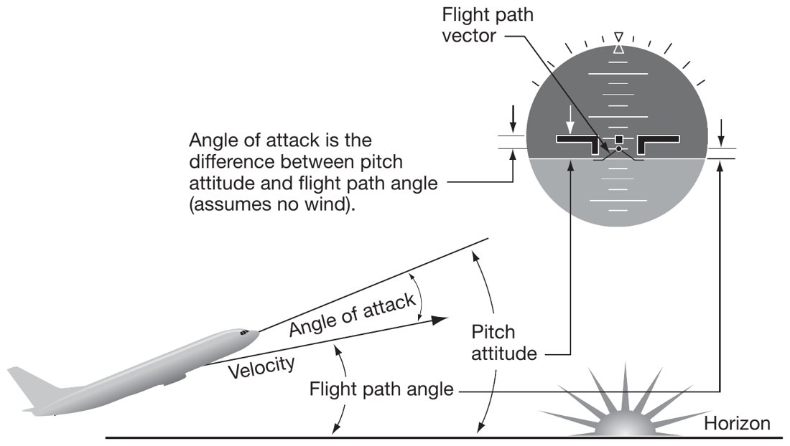

Lesson 04: Lift, Angle of Attack and Flight Path
Learning objectives
- Explain the relationship between lift, airspeed, air density and angle of attack.
- Distinguish pitch attitude, flight path angle and angle of attack.
- Explain why angle of attack, not attitude or speed, determines the stall.
Lift depends on angle of attack — and the wing stalls at its critical angle.
The lift equation
Lift depends on four things: air density, true airspeed (squared), wing area and the lift coefficient, which mainly depends on the angle of attack and the wing configuration (flaps and slats).
Lift = ½ × ρ × V² × S × CL
At a given weight, the aircraft needs a certain amount of lift. If the speed decreases, the angle of attack must increase to keep the same lift — until the wing reaches its critical angle of attack. Speed and angle of attack are linked, but they are not the same thing.
Three different angles
Three different angles (2)
- Pitch attitude (θ) — the angle between the aircraft's longitudinal axis and the horizon. It is what the attitude indicator shows.
- Flight path angle (γ) — the angle between the aircraft's path through the air and the horizon. A flight path vector, where fitted, shows it.
- Angle of attack (α) — the angle between the wing chord and the relative airflow. It decides how much lift the wing produces, and whether it stalls.
In normal flight the three are close together and easy to confuse. In an upset they can be very different. An aircraft in a stalled descent can have a nose-up pitch attitude, a steeply descending flight path, and an angle of attack far above the critical value.

The lift curve
The lift curve (2)
As the angle of attack increases, lift increases almost linearly — until the airflow can no longer follow the upper surface of the wing. Beyond the critical angle of attack, the flow separates, lift falls and drag rises sharply. This is the stall.
A wing can stall at any airspeed, any attitude and any power setting. The only way to unstall it is to reduce the angle of attack.
Angle of attack information on the flight deck
- Stall warning (stick shaker, aural warning) and, on some types, a stick pusher are triggered by angle of attack sensors.
- Low-speed bands, pitch limit indicators and angle of attack indicators (where fitted) help you see how close you are to the critical angle.
- Know which of these your aircraft has, and how they behave if air data is unreliable.
Key takeaways
- Lift depends on density, speed², wing area and lift coefficient (angle of attack and configuration).
- Pitch attitude = flight path angle + angle of attack — they can be very different in an upset.
- The wing stalls at its critical angle of attack — at any speed, attitude or power.
- The only cure for a stall is to reduce the angle of attack.
Knowledge check
An aircraft is 10° nose-up but descending steeply. What does this tell you about its angle of attack?